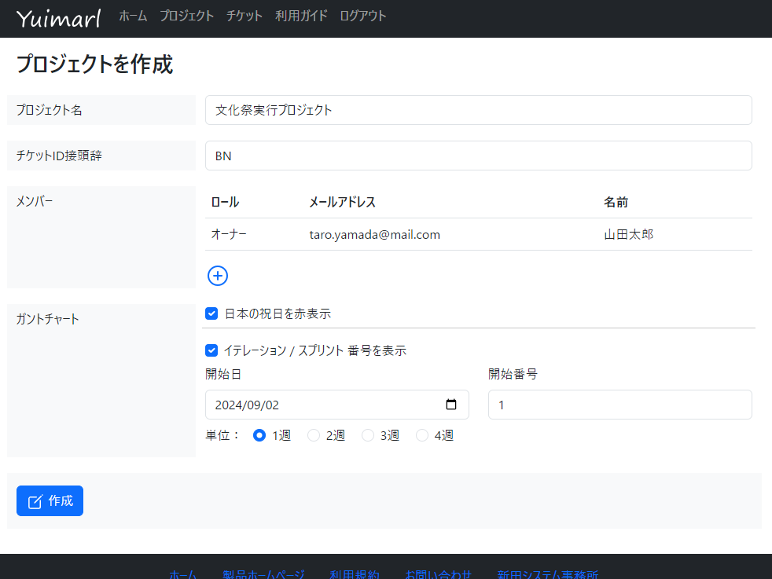
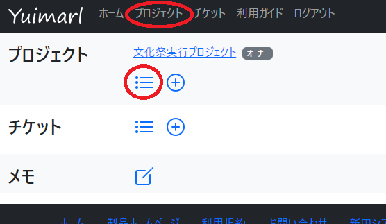
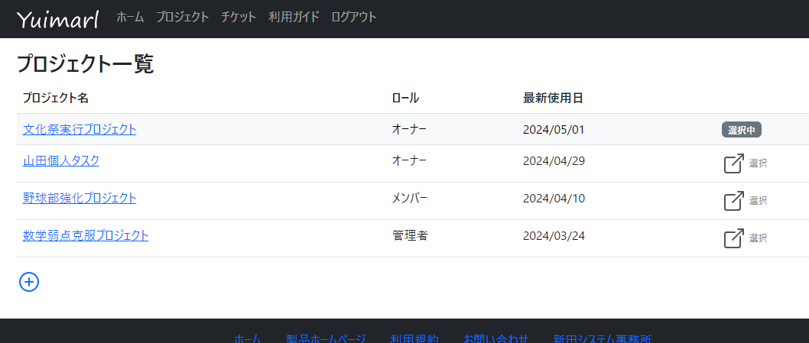
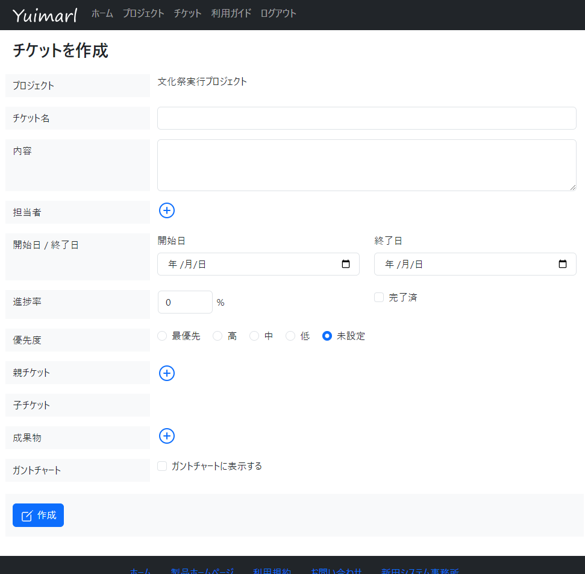
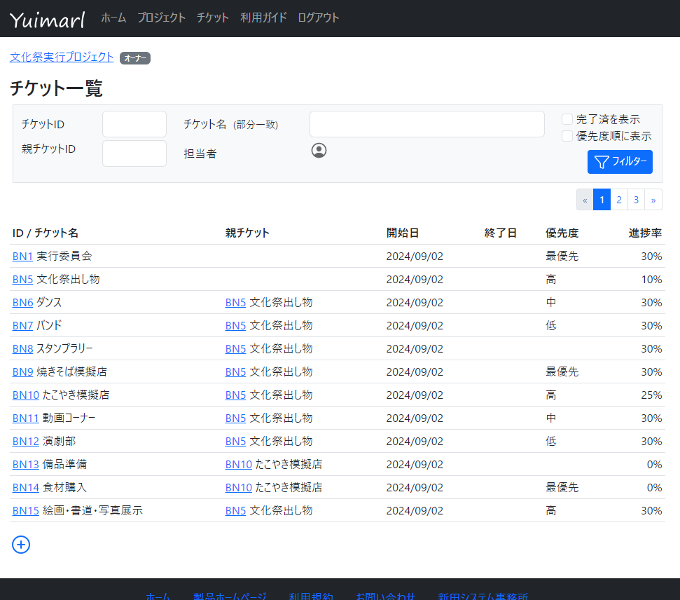
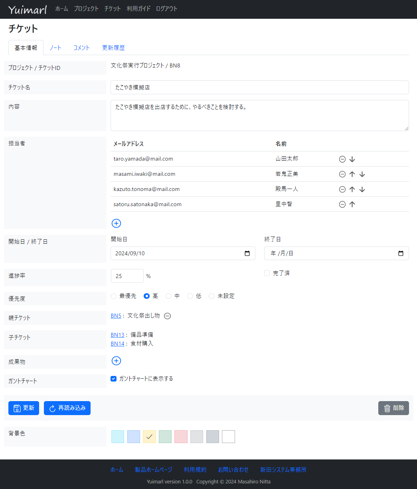

使い方
ログイン
Yuimarl を使うには、Web ブラウザで、次の URL にアクセスします。
初回のアクセス時には、次のログイン画面が表示されます。
{kind=link}
ログイン方法は、以下の３つから選択してください。
- Google でログイン
Googleアカウントでログインします。 - GitHub でログイン
GitHubアカウントでログインします。 - メールでログイン
次のような、メールアドレスの入力画面が表示されます。
メールアドレスを入力して、「次へ」ボタンをクリックすると、メールが送信されます。
そのメールには、ログインするための URL が書かれているので、送信を行ったブラウザで、その URL にアクセスすると、ログインすることができます。
{kind=link}
初回のログインをすると、利用規約画面が表示されます。利用規約に同意される場合は、「同意する」を選択してください。
プロジェクト
プロジェクトを作成する
プロジェクトを作成するには、ホーム画面で、「プロジェクト」欄にある  アイコンをクリックします。
アイコンをクリックします。
{kind=link}
「プロジェクトを作成」画面で、以下の情報を入力します。
{kind=link}
| 項目名 | 説明 |
|---|---|
| プロジェクト名 | プロジェクトの名前を入力します。 |
| チケットID接頭辞 | プロジェクト内でチケットを作成すると、ID が付与されます。その ID が、「接頭辞＋連番」となります。 たとえば、接頭辞に「BN」と入力すると、チケットは、BN1、BN2、BN3 ・・・ となります。 |
| メンバー | プロジェクトのメンバーを登録します。登録方法は後述します。 |
プロジェクトのメンバーを登録するには、「メンバー」欄にある アイコンをクリックします。
「メンバーを検索」ダイアログが表示されます。
{kind=link}
メンバーとして登録したい人のメールアドレスまたは名前を入力して、「検索」ボタンをクリックします。
検索されるのは、Yuimarl のユーザーとして登録されているメールアドレスと名前です。登録されている通りのメールアドレスまたは名前でなければ検索されません。たとえば、姓と名の間にスペースが入って登録されていれば、その通りでなければ検索されません。
{kind=link}
メンバーが検索されたら、「選択」をチェックし、「ロール」を選択します。
ロールは、「管理者」、「メンバー」、「閲覧者」から選択します。ロールの権限は、次の表をご覧ください。（ 「オーナー」は、プロジェクトを作成した人です）
| 機能 | オーナー | 管理者 | メンバー | 閲覧者 |
|---|---|---|---|---|
| プロジェクトを削除 | 〇 | × | × | × |
| プロジェクト情報を更新 | 〇 | 〇 | × | × |
| メンバーを追加 | 〇 | 〇 | × | × |
| メンバー情報を閲覧 | 〇 | 〇 | 〇 | 〇 |
| メンバー情報を更新 | 〇 | 〇 | × | × |
| メンバーを削除 | 〇 | 〇 | × | × |
| チケットを作成 | 〇 | 〇 | 〇 | × |
メンバーを追加し終わったら、「作成」を選択します。
{kind=link}
作成したプロジェクトがホーム画面に表示されます。
{kind=link}
プロジェクト一覧
自分がオーナーまたは参加しているプロジェクトの一覧を表示するには、画面上部のメニューにある「プロジェクト」を選択するか、ホーム画面で、「プロジェクト」欄にある アイコンをクリックします。
{kind=link}
プロジェクトの一覧が表示されます。
{kind=link}
一覧の先頭に表示されているのが、現在選択中のプロジェクトです。
選択中のプロジェクトを変更するためには、 アイコンをクリックします。
プロジェクトを更新する
プロジェクトの情報を更新するには、ホーム画面またはプロジェクト一覧画面で、プロジェクトを選択します。
プロジェクト情報画面が表示されます。
{kind=link}
基本情報タブ
プロジェクトメンバーのロールを変更するには、  アイコンをクリックします。
アイコンをクリックします。
プロジェクトメンバーを削除するには、  アイコンをクリックします。
アイコンをクリックします。
プロジェクトの情報の更新内容を入力し終わったら、「更新」を選択します。
ノートタブ
プロジェクトのノートを入力するには、「ノート」タブを選択します。
ノートの入力方法は、マークダウン をご覧ください。
更新履歴タブ
プロジェクトの更新履歴を参照するには、「更新履歴」タブを選択します。
表示されるのは、直近の30履歴です。
{kind=link}
プロジェクトを削除する
プロジェクトのオーナーは、プロジェクトを削除することができます。
プロジェクトを削除するには、プロジェクト情報画面で「削除」を選択します。
削除確認メッセージが表示されるので、「削除」を選択します。
{kind=link}
チケット
チケットを作成する
プロジェクトのチケットを作成するには、ホーム画面で、「チケット」欄にある アイコンをクリックします。
{kind=link}
「チケットを作成」画面で、以下の情報を入力します。
{kind=link}
| 項目名 | 説明 |
|---|---|
| チケット名 | チケットの名前を入力します。 |
| 内容 | チケットの内容を入力します。 |
| 担当者 | チケットの担当者を選択します。選択方法は後述します。 |
| 開始日 / 終了日 | 開始日と終了日が決まっていれば入力します。 |
| 進捗率 | 進捗率を0～100で入力します。「完了済」をチェックすると「100」と入力されます。 |
| 優先度 | 優先度を「最優先」、「高」、「中」、「低」、「未設定」から選択します。 |
| 親チケット | このチケットの親となるチケットを選択します。選択方法は後述します。 |
| 子チケット | ここは入力時には入力できません。（このチケットを親チケットとするチケットが表示されます） |
| 成果物 | このチケットの成果物を入力します。入力方法は後述します。 |
チケットの担当者を登録するには、「担当者」欄にある アイコンをクリックします。
「担当者を追加」ダイアログが表示されます。プロジェクトのメンバーが一覧表示されています。
担当者として登録したい人の「選択」をチェックして、「担当者に追加」ボタンをクリックします。
{kind=link}
チケット情報画面に担当者が表示されます。
または アイコンで上下に移動することができます。
{kind=link}
チケットの親チケットを登録するには、「親チケット」欄にある アイコンをクリックします。
「親チケットを追加」ダイアログが表示されます。
親チケットの ID を入力して「検索」をクリックすると、チケットが検索されるので、「親チケットを追加」ボタンをクリックすると、親チケットが設定されます。
{kind=link}
チケットの成果物を登録するには、「成果物」欄にある アイコンをクリックします。
「成果物を追加」ダイアログが表示されます。
「成果物名」と「ファイルパス / URL」を入力してください。成果物がファイルサーバーにある場合は「ファイルパス」、Web上にある場合は「URL」を入力してください。
「追加」ボタンをクリックすると、成果物が設定されます。
{kind=link}
入力が終わったら、「作成」を選択します。
チケット一覧
プロジェクトに登録されているチケットの一覧を表示するには、画面上部のメニューにある「チケット」を選択するか、ホーム画面で、「チケット」欄にある アイコンをクリックします。

チケットの一覧が表示されます。
{kind=link}
以下の条件を入力して「フィルター」ボタンをクリックすると、条件に該当するチケットが絞り込まれて表示されます。
- チケットID
入力されたチケットID のチケットを表示します。 - チケット名（部分一致）
チケット名に、入力された文字列が含まれるチケットを表示します。 - 親チケットID
入力されたチケットID の子チケットを表示します。 - 完了済を表示
チェックを付けると、完了済みのチケットも表示されます。（チェックを付けていないと、完了済みのチケットは表示されません）
チケットを更新する
チケットの情報を更新するには、ホーム画面またはチケット一覧画面で、チケットID を選択します。
チケット情報画面が表示されます。
{kind=link}
基本情報タブ
基本情報タブでの入力内容は、チケットの作成時と同じです。
更新内容を入力し終わったら、「更新」を選択します。
ノートタブ
チケットのノートを入力するには、「ノート」タブを選択します。
ノートの入力方法は、マークダウン をご覧ください。
コメントタブ
現在は、コメントタブはお使いいただくことができません。
更新履歴タブ
チケットの更新履歴を参照するには、「更新履歴」タブを選択します。
表示されるのは、直近の30履歴です。
{kind=link}
チケットを削除する
プロジェクトのオーナーまたは管理者と、チケットを作成したメンバーは、チケットを削除することができます。
チケットを削除するには、チケット情報画面で「削除」を選択します。
削除確認メッセージが表示されるので、「削除」を選択します。
{kind=link}